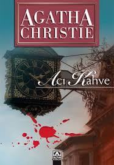

Healthy sandwiches for your team

The Buzz
What are people saying?
Uzun zamandır okuduğum en ürkütücü Agatha Christie romanı.
Sunday Express
Ünlü bir fizikçi olan Sir Claude Avory savunma sanayi alanında çok önemli bir formül üretir. Ancak aile fertlerinin bu formülü çalacağından şüphe etmektedir. Duruma açıklık getirmesi için ünlü dedektif Hercule Poirot'yu malikânesine davet eder. Bu arada Sir Avory tüm aile fertlerini de çağırmıştır. Yemek sonrası kütüphanede bir yandan kahvesini yudumlarken bir yandan da onlarla sohbet edecektir. Çünkü formülün akrabaları tarafından çalındığını anlamıştır. Uşağına gizlice kapıyı kilitlemesini emreder, misafirlerine de ışıkların kısa bir süreliğine kapatılacağını ve formülü çalan kişinin kâğıdı sehpanın üzerine koymasını söyler. Ancak ışıklar yandığında misafirler kendilerini hiç de beklemedikleri bir manzaranın içinde bulurlar; ortada boş bir zarf ve bir ceset vardır. Poirot malikâneye ulaştığında Sir Avory'nin cansız bedeniyle karşılaşır. Şimdi her şey ünlü dedektifin keskin zekâsına, müthiş dikkatine ve eşsiz gözlemine kalmıştır... "Poirot... tıpkı sade bir kahve gibi canlandırıp ilham veriyor. Acı Kahve, Christie hikâyelerine yapılmış hoş bir katkı. Publishers Weekly

We switched to Sam's Sarnies and won our first government contract the next day. Coincidence? I think not!
Our mission
Join us in helping busy professionals eat healthily
We believe that healthy workers are more productive workers.
Providing your team with a healthy lunch each day improves both motivation and morale.
We deliver healthy sandwiches, made with the best ingredients, to your workplace every day.